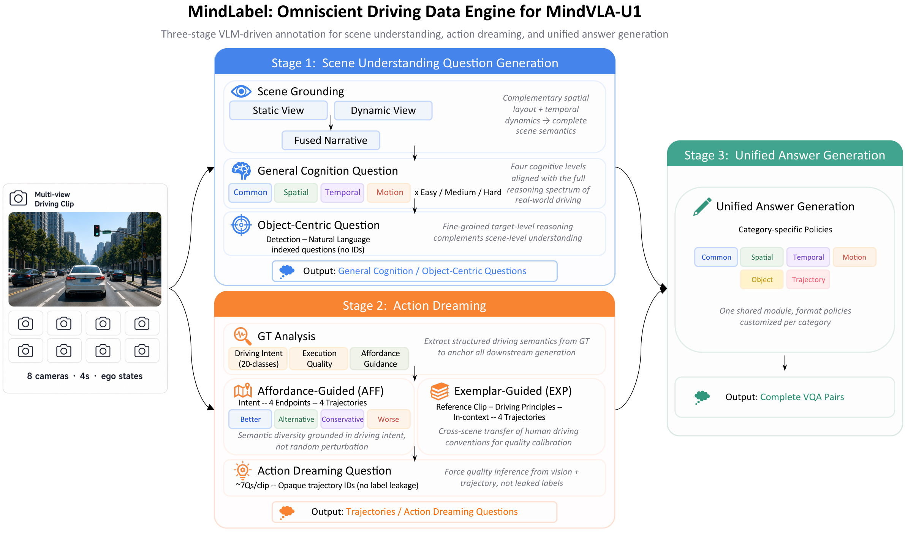
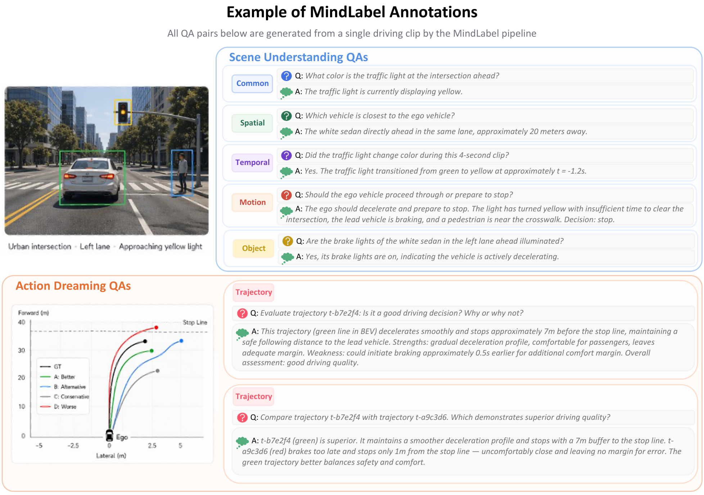
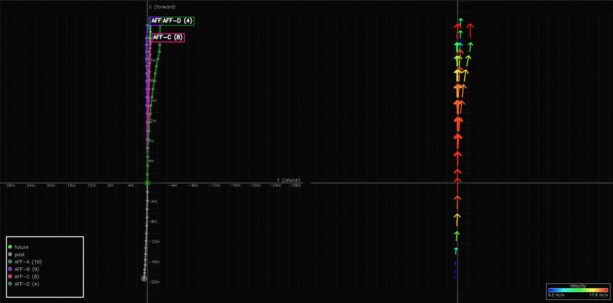
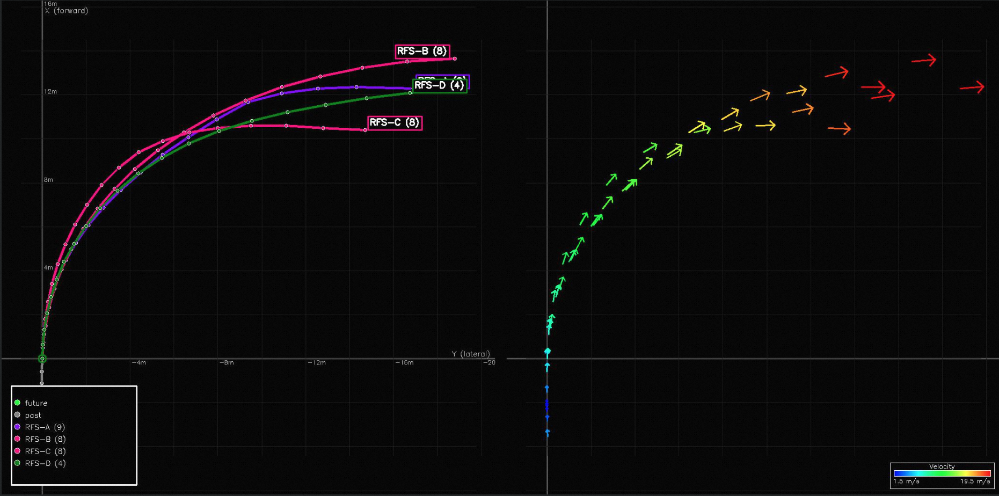

Pipeline. Scene Understanding QA generation and Action Dreaming
run in parallel; a unified answer module handles category-specific
generation.
Shared annotation pipeline for the Mind-Omni family.
An auto-labeling pipeline run on WOD-E2E frames with two parallel branches — Scene Understanding VQA (Common · Spatial · Temporal · Motion · Object-Centric) and Action Dreaming (intent-conditioned trajectory synthesis with affordance / exemplar guidance + trajectory-evaluation QA) — feeding a unified answer-generation module. Main results consume only the basic VQA + 3-class GT intent; the richer outputs are released for the community.







MindLabel annotations on real WOD-E2E frames. Scene A — daytime urban: front-camera panorama with dreamed trajectories overlaid (four AFF candidates A–D together with the GT future, color-coded by RFS quality) and the corresponding BEV view. Scene B — nighttime intersection: the same trajectory overlay plus the Object-Centric annotation pass (25 bounding boxes, 11 foreground / 14 background, each grounded by a natural-language descriptor e.g. “the car in front”, “intersection right corner”). Scene C — rolling past-video input (8 frames, 2 Hz) shown with its full annotation stack: rule-labelled lateral/longitudinal meta-actions and the derived driving intent, the 4-step Perceive/Predict/Judge/Plan CoT, and one sampled QA pair per Scene-Understanding category.